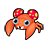

Pokémon
- Wild Amoonguss and Paras have a 50% chance of holding a TinyMushroom, a 5% chance of holding a Big Mushroom, and a 1% chance of holding a BalmMushroom (in dark grass only).
- Wild Zangoose have a 5% chance of holding a Quick Claw.
- Wild Audino have a 50% chance of holding an Oran Berry and a 5% chance of holding a Sitrus Berry.
- Wild Emolga always hold a Cheri Berry.
- Wild Shroomish have a 5% chance of holding a Kebia Berry.
- Wild Buizel and Floatzel have a 5% chance of holding a Wacan Berry.
- Wild Red-Striped Basculin have a 5% chance of holding a DeepSeaTooth.
- Wild Blue-Striped Basculin have a 5% chance of holding a DeepSeaScale.
Walking
Walking (dark grass)
Walking (rustling grass)
Swarm
During a swarm, the player has a 40% chance of encountering the swarming Pokémon, and a 60% chance that their encounter is taken from the normal encounter table.
| Pokémon | Games | Level | ||
|---|---|---|---|---|
 |
Shroomish | B | W | lv. 15-55 |
|
 |
Paras | B | W | lv. 15-55 |
Surfing
Surfing (rippling water)
Fishing
Fishing (rippling water)
Pokémon
- Wild Zangoose have a 5% chance of holding a Quick Claw.
- Wild Amoonguss have a 50% chance of holding a TinyMushroom, a 5% chance of holding a Big Mushroom, and a 1% chance of holding a BalmMushroom (in dark grass only).
- Wild Audino have a 50% chance of holding an Oran Berry and a 5% chance of holding a Sitrus Berry.
- Wild Emolga always hold a Cheri Berry.
- Wild Masquerain have a 5% chance of holding SilverPowder.
- Wild Red-Striped Basculin have a 5% chance of holding a DeepSeaTooth.
- Wild Blue-Striped Basculin have a 5% chance of holding a DeepSeaScale.
Walking
Walking (dark grass)
Walking (rustling grass)
Swarm
During a swarm, the player has a 40% chance of encountering the swarming Pokémon, and a 60% chance that their encounter is taken from the normal encounter table.
| Pokémon | Level | |
|---|---|---|
| Masquerain | lv. 40-55 | |
Static
| Pokémon | Level | Notes | |
|---|---|---|---|
 |
Virizion | 45 | If defeated or run from, it reappears at level 65 after defeating the Elite Four. |
 |
Amoonguss | 47 | Two total. Appear as regular item balls, but will attack when interacted with. |